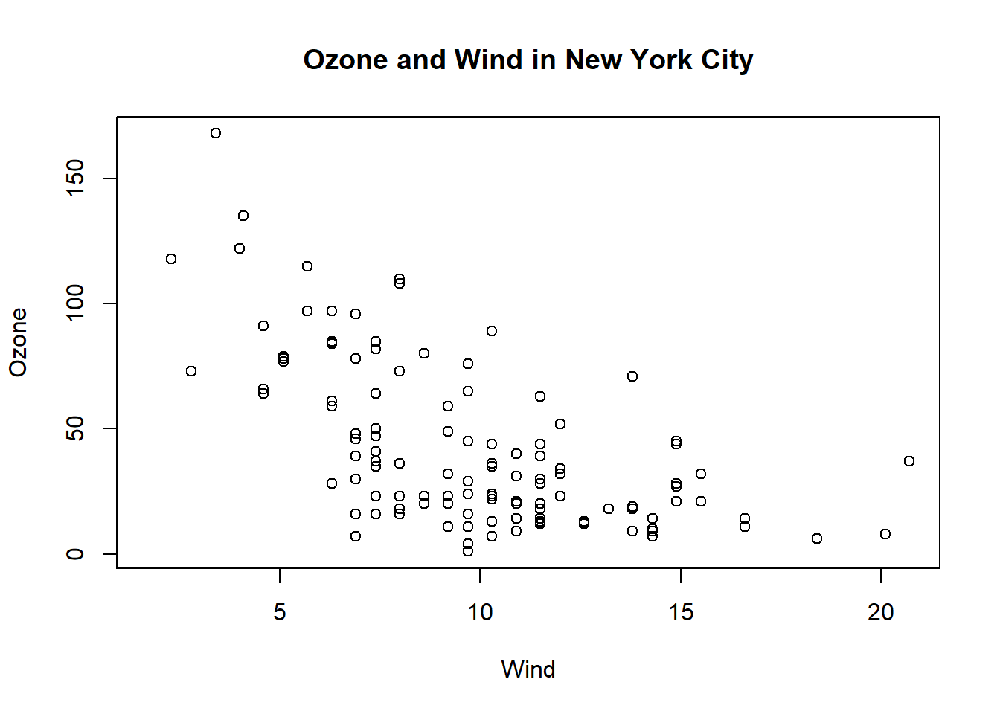

You should always be comparing at least two things.
2. Show causality, mechanism, explanation, systematic structure
Generally, it’s difficult to prove that one thing causes another thing even with the most carefully collected data. But it’s still often useful for your data graphics to indicate what you are thinking about in terms of cause.
3. Show multivariate data
The point is that data graphics should attempt to show this information as much as possible, rather than reduce things down to one or two features that we can plot on a page… From the plot it seems that there is a slight negative relationship between the two variables….This example illustrates just one of many reasons why it can be useful to plot multivariate data and to show as many features as intelligently possible. In some cases, you may uncover unexpected relationships depending on how they are plotted or visualized.
4. Integrate evidence
Data graphics should make use of many modes of data presentation simultaneously, not just the ones that are familiar to you or that the software can handle. One should never let the tools available drive the analysis; one should integrate as much evidence as possible on to a graphic as possible.
5. Describe and document the evidence
Data graphics should be appropriately documented with labels, scales, and sources. A general rule for me is that a data graphic should tell a complete story all by itself. Is there enough information on that graphic for the person to get the story? While it is certainly possible to be too detailed, I tend to err on the side of more information rather than less.
6. Content, Content, Content
Analytical presentations ultimately stand or fall depending on the quality, relevance, and integrity of their content. This includes the question being asked and the evidence presented in favor of certain hypotheses. Starting with a good question, developing a sound approach, and only presenting information that is necessary for answering that question, is essential to every data graphic.
17.2 Types of Graphs
Visualizing the data via graphics can be important at the beginning stages of data analysis to understand basic properties of the data, to find simple patterns in data, and to suggest possible modeling strategies. In later stages of an analysis, graphics can be used to “debug” an analysis, if an unexpected (but not necessarily wrong) result occurs, or ultimately, to communicate your findings to others.
We will make a distinction between exploratory graphs and final graphs:
Exploratory graphs are usually made very quickly and a lot of them are made in the process of checking out the data, developing a personal understanding of the data and to prioritize tasks for follow up. Details like axis orientation or legends, while present, are generally cleaned up and prettified if the graph is going to be used for communication later.
17.2.1 One-dimension graphs
Graph
Code
Use
Five-number summary
fivenum(), summary()
Boxplots
boxplot(pollution$pm25, col = "blue")
Commonly plot outliers that go beyond the bulk of the data
It is used to find the correlation between a variable and other variables, and to select the important variables, which is also known as variable selection
Similar to scatterplots but rather plots a 2-D histogram. Can be useful for scatterplots with many many data points
17.3 How Does a Plot Get Created?
First, we can read the data into R with read.csv(). For example, the avgpm25.csv dataset contains the annual mean PM2.5 averaged over the period 2008 through 2010
class <-c("numeric", "character", "factor", "numeric", "numeric")pollution <-read.csv("data/avgpm25.csv", colClasses = class)
Explicitly launch a graphics device
Call a plotting function to make a plot (Note: if you are using a file device, no plot will appear on the screen)
Annotate the plot if necessary
Explicitly close graphics device with dev.off() (this is very important!)
Example:
## Open PDF device; create 'myplot.pdf' in my working directorypdf(file ="myplot.pdf") ## Create plot and send to a file (no plot appears on screen) with(faithful, plot(eruptions, waiting))## Annotate plot; still nothing on screen title(main ="Old Faithful Geyser data") ## Close the PDF file device dev.off() ## Now you can view the file 'myplot.pdf' on your computer
17.3.1 plot(x,y)
plot(x, y) is used to plot one vector against another, with the x values on the x-axis and the y values on the y-axis.
To add points (x[1], y[1]), (x[2], y[2]), … to the current plot, use points(x, y).
To add lines instead use lines(x, y).
Vertical or horizontal lines can be drawn using abline(v = xpos) and abline(h = ypos).
Both points and lines take the optional input col, which determines the colour (“red”, “blue”, etc.). The complete list of available colours can be obtained by the colours function (or colors).
To add the text labels[i] at the point (x[i], y[i]), use text(x, y, labels). The optional input pos is used to indicate where to position the labels in relation to the points.
A title can be added with title(text)', wheretext`is a character string.
As an example we plot part of the parabola y2 = 4x, as well as its focus and directrix. We make use of the surprisingly useful input type = "n", which results in the graph dimensions being established, and the axes being drawn, but nothing else.
Example:
x <-seq(0, 5, by =0.01)y.upper <-2*sqrt(x)y.lower <--2*sqrt(x)y.max <-max(y.upper)y.min <-min(y.lower)plot(c(-2, 5), c(y.min, y.max), type ="n", xlab ="x", ylab ="y")lines(x, y.upper)lines(x, y.lower)abline(v=-1)points(1, 0)text(1, 0, "focus (1, 0)", pos=4)text(-1, y.min, "directrix x = -1", pos =4)title("The parabola y^2 = 4*x")
17.3.2 Graphics Devices
When you make a plot in R, it has to be “sent” to a specific graphics device. The most common place for a plot to be “sent” is the screen device. Therefore, when making a plot, you need to consider how the plot will be used to determine what device the plot should be sent to.
The list of devices supported by your installation of R is found in ?devices.
Functions like plot() in base, xyplot() in lattice, or qplot in ggplot2 will default to sending a plot to the screen device.
Vector
Bitmap
Good for line drawings and plots with solid colors using a modest number of points
good for plots with a large number of points, natural scenes or web-based plots
pdf (line-type graphics, resizes well, usually portable)
png (good for line drawings or images with solid colors)
svg (XML-based scalable vector graphics; supports animation and interactivity)
jpeg (good for plotting many many many points, does not resize well)
win.metafile
tiff
postscript
bmp
It is possible to open multiple graphics devices (screen, file, or both), for example when viewing multiple plots at once. Plotting can only occur on one graphics device at a time, though.
[One way of having more than one plot visible is to open additional graphics devices. In a Windows environment this is done by using the command windows() before each additional plot.]
Alternatively you can create a *grid of plots** in a single graphics window using the commands par(mfrow = c(nr, nc)) or par(mfcol = c(nr, nc)). Setting mfrow = c(nr, nc) creates a grid of plots with nr rows and nc columns, which is filled row by row. mfcol is similar but fills the plots column by column.
Example:
par(mfrow =c(2, 2), mar=c(5, 4, 2, 1))curve(x*sin(x), from =0, to =100, n =1001)curve(x*sin(x), from =0, to =10, n =1001)curve(x*sin(x), from =0, to =1, n =1001)curve(x*sin(x), from =0, to =0.1, n =1001)

par(mfrow =c(1, 1))
The currently active graphics device can be found by calling dev.cur()
Every open graphics device is assigned an integer starting with 2 (there is no graphics device 1). You can change the active graphics device with dev.set(<integer>)
17.3.3 Copying Plots
Note that copying a plot is not an exact operation, so the result may not be identical to the original:
## Copy my plot to a PNG file (follows the previous code from pdf creation)dev.copy(png, file ="geyserplot.png") ## Don't forget to close the PNG device! dev.off()
17.4 The Base Plotting System
The base plotting system is the original plotting system for R. The basic model is sometimes referred to as the “artist’s palette” model. The idea is you start with blank canvas and build up from there.
You will typically start with a plot function (or similar plot creating function) to initiate a plot and then annotate the plot.
If you don’t have a completely well-formed idea of how you want your data to look, you’ll often start by “throwing some data on the page” and then slowly add more information to it as our thought process evolves.
Downsides:
You can’t go backwards once the plot has started.
While the base plotting system is nice in that it gives you the flexibility to specify these kinds of details to painstaking accuracy, sometimes it would be nice if the system could just figure it out for you.
It’s difficult to describe or translate a plot to others because there’s no clear graphical language or grammar that can be used to communicate what you’ve done.
17.4.1 Packages
graphics: contains plotting functions for the “base” graphing systems, including plot, hist, boxplot and many others
grdevices: contains all the code implementing the various graphics devices, includ- ing X11, PDF, PostScript, PNG, etc.
type = “n”. Notice that when constructing the initial plot, we use the option type = “n” in the call to plot(). This is a common paradigm as plot() will draw everything in the plot except for the data points inside the plot window.
with(airquality, plot(Wind, Ozone, main ="Ozone and Wind in New York City", type ="n"))
17.4.2 Plot with a Regression Line
First make the plot (as above).
Fit a simple linear regression model using the lm() function.
Take the output of lm() and pass it to the abline() function which automatically takes the information from the model object and calculates the corresponding regression line
17.4.3 Multiple Base Plots
Both the mfrow and mfcol parameters take two numbers: the number of rows of plots followed by the number of columns.
The only difference between the two parameters is that if mfrow is set, then the plots will be drawn row-wise; if mfcol is set, the plots will be drawn column-wise.
17.4.4 Color in Plots
Typically we add color to a plot, not to improve its artistic value, but to add another dimension to the visualization. It makes sense that the range and palette of colors you use will depend on the kind of data you are plotting.
Careful choices of plotting color can have an impact on how people interpret your data and draw conclusions from them.
The function colors() lists the names of (657) colors you can use in any plotting function. Typically, you would specify the color in a (base) plotting function via the col argument.
The grDevices package has two functions, they differ only in the type of object that they return:
colorRamp: Take a palette of colors and return a function that takes values between 0 and 1.
pal <-colorRamp(c("red", "blue")) pal(0)
The numbers in the matrix will range from 0 to 255 and indicate the quantities of red, green, and blue (RGB) in columns 1, 2, and 3 respectively. there are over 16 million colors that can be expressed in this way.
The idea here is that you do not have to provide just two colors in your initial color palette; you can start with multiple colors and colorRamp() will interpolate between all of them.
colorRampPalette: Takes a palette of colors and returns a function that takes integer arguments and returns a vector of colors interpolating the palette (like heat.colors() or topo.colors()).
pal <-colorRampPalette(c("red", "yellow"))pal(3)
Returns 3 colors in between red and yellow. Note that the colors are represented as hexadecimal strings.
Note that the rgb() function can be used to produce any color via red, green, blue proportions and return a hexadecimal representation:
rgb(0, 0, 234, maxColorValue =255)
17.4.5 RColorBrewer Package
Part of the art of creating good color schemes in data graphics is to start with an appropriate color palette that you can then interpolate with a function like colorRamp() or colorRampPalette().
Here is a display of all the color palettes available from the RColorBrewer package:
library(RColorBrewer) display.brewer.all()
The brewer.pal() function which has two arguments:
Adding transparency: Color transparency can be added via the alpha parameter to rgb() to produce color specifications with varying levels of transparency.
rgb(1, 0, 0, 0.1)
[1] "#FF00001A"
Transparency can be useful when you have plots with a high density of points or lines.
If we add some transparency to the black circles, we can get a better sense of the varying density of the points in the plot.
plot(x, y, pch =19, col =rgb(0, 0, 0, 0.15)) ## x, y from the previous example
17.5 The Lattice System
First you must load the lattice package with the library function: library(lattice).
With the lattice system, plots are created with a single function call, such as xyplot() or bwplot().
There is no real distinction between the functions that create or initiate plots and the functions that annotate plots because it all happens at once.
Lattice plots tend to be most useful for conditioning types of plots, i.e. looking at how y changes with x across levels of z. These types of plots are useful for looking at multidimensional data and often allow you to squeeze a lot of information into a single window or page.
Another aspect of lattice that makes it different from base plotting is that things like margins and spacing are set automatically. This is possible because entire plot is specified at once via a single function call.
The notion of panels comes up a lot with lattice plots because you typically have many panels in a lattice plot (each panel typically represents a condition, like “region”).
Once a plot is created, you cannot “add” to the plot (but of course you can just make it again with modifications).
17.6 ggplot2
Splits the difference between base and lattice in a number of ways. Taking cues from lattice, the ggplot2 system automatically deals with spacings, text, titles but also allows you to annotate by “adding” to a plot.
install.packages("ggplot2")library(ggplot2)
A typical plot with the ggplot package looks as follows:
data(mpg)qplot(displ, hwy, data = mpg)
In ggplot2, aesthetics are the things we can see (e.g. position, color, fill, shape, line type, size). You can use aesthetics in ggplot2 via the aes() function:
ggplot(data, aes(x=var1, y=var2))
17.6.1 Geometric objects
Geometric objects are the plots or graphs you want to put in the chart.
You can use geom_point() to create a scatterplot, geom_line() to create a line plot, and geom_boxplot() to create a boxplot in the chart.
help.search("geom_", package="ggplot2")
In ggplot2, geom is also the layers of the chart. You can add in one geom object after another, just like adding one layer after another layer.